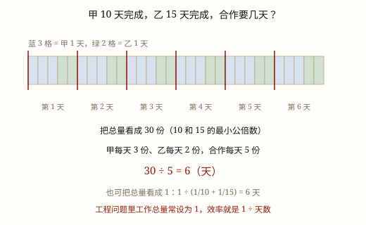

工程问题
把整件工作看作 1，工作效率就是「每天完成这件工作的几分之几」。合作效率 = 各人效率相加。
| 所属主题 | 解决问题 |
|---|---|
| 所属模块 | 数与代数 |
| 课标学段 | 第三学段（5~6年级） |
| 前置知识 | 分数乘法与分数除法的算理 |
| 核心素养 | 模型意识运算能力推理意识 |
教材定位
人民教育出版社《2024年版》
落在六上第 3 单元「分数除法」的解决问题：工程问题。
课标要求
| 数与代数·数与运算 | 能进行简单的小数、分数四则运算和混合运算，感悟运算的一致性，发展运算能力和推理意识。 印刷第 24 页 行为动词：掌握 |
|---|---|
| 数与代数·数量关系 | 能运用常见的数量关系解决实际问题，能合理解释结果的实际意义，逐步形成模型意识和几何直观，提高解决问题的能力。 印刷第 24 页 行为动词：运用 |
说明
装修队刷一面墙，甲队单独刷要 10 天，乙队单独刷要 15 天，两队一起刷要几天？这类不给「墙有多大」、只给「各自要几天」的题，叫工程问题。
没有具体数量，就自己造一个：把整件工作看作 1。甲 10 天做完，就是把这 1 平均分成 10 份，每天做 1/10；乙每天做 1/15。工作效率就是「每天完成这件工作的几分之几」。
两人一起做，一天做 1/10 + 1/15 = 1/6。整件工作 1 里有几个 1/6，就要几天：1 ÷ 1/6 = 6 天。
为什么可以设成 1？因为总量是多少不影响答案。假设墙是 30 平方米：甲每天 3、乙每天 2，合起来 5，30 ÷ 5 = 6 天，还是 6 天。设成 1 最省事，效率直接变成分数，不用管单位。
使用场景
装修队合作：刷墙、铺砖、装柜子，两个队各报一个工期，算一起做要几天。
两台打印机印试卷：教导处赶印期中卷，一台快一台慢，同时开机要多久。
两个水泵抽水：小区水池换水，两个出水口一起抽，多久能抽干。
绿化队修剪草坪：两个小组分片干，合起来多久能干完。
注意点
效率是「1 ÷ 天数」，不是天数。10 天做完，效率是 1/10，不是 10。天数越大，效率越小。
合作效率相加，不能相乘。两个人一起干，一天做的量是两人各自一天的量加起来。
中途有人离开要分段算。先算一起干了多少，再看剩下的由谁做、还要多久。
算完记得回到「天」。1 ÷ 1/6 得到的是 6 天，别把中间结果 1/6 当成答案。

图 1：把总量看成 1（或 30 份），效率就是 1÷天数
为什么是这样
算理推导
把整面墙想成一块「工作量 1」，不去管它是 30 平方米还是 45 平方米。
甲 10 天做完，10 天正好铺满这块 1，所以每天铺 1/10；乙 15 天做完，每天 1/15。
两队同时干一天，墙上多出 1/10 + 1/15：通分得 3/30 + 2/30 = 1/6。
一天完成 1/6，整块 1 里有 6 个 1/6，所以要 6 天：1 ÷ 1/6 = 6。
换总量 30 再算：甲 3、乙 2，合计 5，30 ÷ 5 = 6。两次一样，说明设成 1 不是取巧，是把不影响答案的量删掉了。
动手实验
拿一张画了 30 个方格的长方形纸当「一面墙」，甲每分涂 3 格、乙每分涂 2 格，两人同时涂，计时到涂满，应是 6 分钟。再把纸换成 60 格、同时把效率也翻倍（甲每分 6 格、乙每分 4 格），计时仍是 6 分钟——总量和效率按同一倍数变化，时间就不变；若只把格子换成 60 格而速度不变，就要 12 分钟了。这就是可以把总量设为 1 的原因：真正决定时间的，是效率之间的比。
按场景的例题
例 1（场景：工程建造） 两个装修队刷墙
一面墙，甲队单独刷要 10 天，乙队单独刷要 15 天。两队一起刷，几天刷完？
解：甲每天 1/10，乙每天 1/15，合起来 1/10 + 1/15 = 1/6；1 ÷ 1/6 = 6（天）。
答：6 天刷完。
例 2（场景：校园生活） 两台打印机印卷
一批试卷，A 打印机单独印要 6 小时，B 打印机单独印要 3 小时。两台同时印，几小时印完？
解：A 每小时 1/6，B 每小时 1/3，合计 1/6 + 2/6 = 1/2；1 ÷ 1/2 = 2（小时）。
答：2 小时印完。
例 3（场景：绿化照明） 两个绿化队铺草坪
一块草坪，甲队单独铺要 9 天，乙队单独铺要 18 天。两队合作 3 天后甲队被调走，剩下的乙队单独铺，还要几天？
解：合作效率 1/9 + 1/18 = 1/6，3 天完成 3 × 1/6 = 1/2，还剩 1/2；乙每天 1/18，需要 1/2 ÷ 1/18 = 9（天）。
答：还要 9 天。
常用推论
工作总量 = 效率 × 时间；总量设为 1 时，时间 = 1 ÷ 效率。
合作时间 = 1 ÷ (1/a + 1/b)，a、b 是各自单独做的天数。
已知合作时间和甲单独的时间求乙：1 ÷ 合作时间 - 1/a 是乙的效率，再取倒数。
效率与时间成反比：甲 10 天、乙 15 天，效率比是 15 : 10 = 3 : 2——谁用的天数少，谁的效率高。
易错点
错甲 10 天、乙 15 天，合作效率算成 1/10 × 1/15 = 1/150。
为什么错一起干是「一天做的量相加」，不是相乘。乘出来比一个人单独干还慢十几倍，明显不合理。
正确1/10 + 1/15 = 1/6，6 天完成。
错把「10 天完成」当成效率 10，算出一堆几十的效率，时间变成零点零几天。
为什么错天数越大效率越低，不可能天数越大效率越高。效率必须是「几分之一」。
正确效率 = 1 ÷ 天数，10 天做完的效率是 1/10。
错合作 3 天后甲离开，仍按合作效率算完全程，得出 3 ÷ 1/6 = 18 天。
为什么错甲走后效率变了，后面的活只剩乙一个人做，必须把过程分成两段。
正确先算 3 天完成的 1/2，再用剩余量除以乙的效率。
直观理解
把整件活想成一块蛋糕：甲 10 天吃完，每天吃 1/10；乙 15 天吃完，每天吃 1/15。两人一起吃，每天吃掉的就是两块加起来那么大。工程问题和相遇问题是一个模子：一个速度相加吃路程，一个效率相加吃工作量，只是工作量没有具体米数，只好记作 1。
总量看作一，效率几分一；合作效率加一起，一除便是工期。